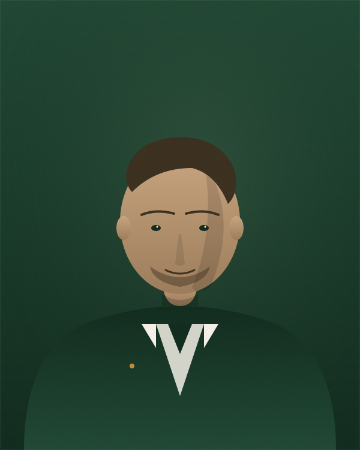
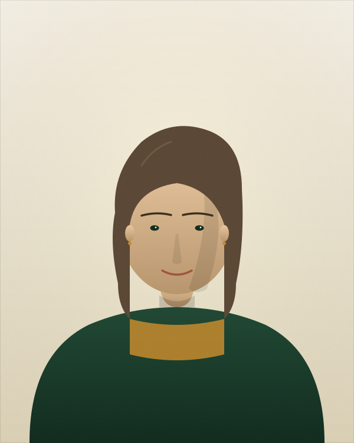
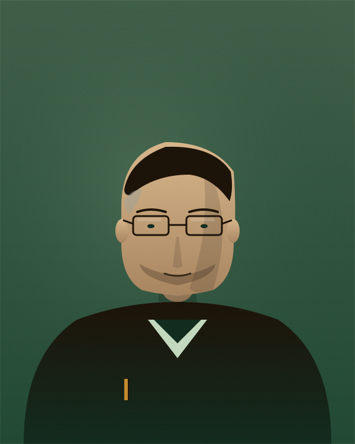

Wir sind ein kleines Team aus Karlsruhe — IHK-geprüft, in der Region verwurzelt und groß genug, um auch komplexe Industriestandorte zu betreuen.
Wir machen einen Beruf, über den niemand gerne spricht. Genau deshalb ist es uns wichtig, ihn ordentlich zu machen — diskret, fachlich sauber, und ohne den Respekt vor dem zu verlieren, was lebt.
WZ Schädlingsbekämpfung ist ein lokal verankertes Karlsruher Familienunternehmen. Wir betreuen Privathaushalte ebenso wie Lebensmittel-Logistiker, Bäckereien, Krankenhäuser und Industriestandorte in der gesamten Region.
Was uns wichtig ist: ehrliche Beratung — auch wenn das bedeutet, dass wir Ihnen sagen, dass Sie unseren Einsatz nicht brauchen.
Wir fahren ohne Aufschrift. Wir reden nicht über Kunden. Was passiert ist, bleibt zwischen uns.
Wir bekämpfen, aber wir beraten auch — wo sind Eintrittsstellen, was ist Nahrungsquelle, wie lässt sich der Befall vermeiden.
Wenn ein Einsatz nicht erfolgreich war, kommen wir kostenfrei wieder. Schriftlich vereinbart, jedes Mal.
Bei uns kommt nicht der nächste freie Mitarbeiter — bei uns kommt jemand, den Sie kennen.

Gründer von WZ. Schwerpunkt: Industrie und Lebensmittellogistik, IFS- und HACCP-Audits.

Spezialisiert auf Wespen-, Hornissen- und Bienenumsiedlung. Naturschutzkonformes Vorgehen.

Verantwortlich für sensorgestützte Köderstationen, digitale Doku, Trend-Reports.
Florian Z. gründet WZ Schädlingsbekämpfung als Ein-Mann-Betrieb in Karlsruhe.
Übernahme des Schädlingsmanagements für mittelständische Lebensmittelproduzenten.
Vollständige Doku-Workflows nach IFS, BRC, GMP. Audit-Begleitung als Service.
Erstes vollständig digital überwachtes Industriemandat — 156 Köderpunkte, Live-Daten.
Team aus drei Personen, betreut über 200 Privatkund:innen und 40+ Gewerbestandorte in der Region.